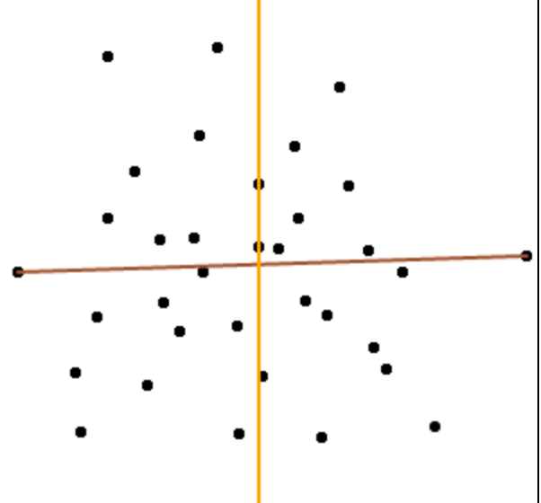
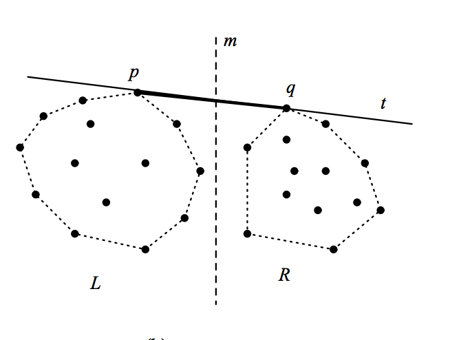

As opposed to a general divide and conquer algorithm, the Ultimate CH Algorithm uses a divide, merge and conquer algorithm. We split the points into upper and lower groups using the xmin and xmax and find the hulls of both individually.
To find the upperhull, we find the median x-coordinate and find an upper bridge connecting the two medians. We then recurse and find the medians of the left and right subgroups until the full upperhull is found.
The brown line is the connection between xmin and xmax. The orange line is the median line of the x-coordinates of the upper point set.
In having a sub O(n log n) algorithm, we know we cannot sort at all so we can afford any O(n) step. The two big steps of bridge finding and median finding can both be found in O(n) time. As we will see later, there are O(log h) levels of recursion giving the Ultimate Convex Hull Algorithm a total running time of O(n log h).
Though this technique isn't rooted in just Computational Geometry, median finding is a very integral part of the fast time complexity of this algorithm. Using the median of medians algorithm, we acheive linear time in median selection.
The crux of this algorithm is finding good pivots and using them in a quickselect/binary search algorithm. We spend O(n) time in the size of the remaining point set at each level. Multiple linear time steps with n decreasing by a linear factor at each step results in a geometric series and overal linear time.
A general overiew of the median of medians algorithm:
Visualization of median of medians algorithm. Arrow from x to y means that x > y.
In finding an upper bridge to connect left and right sides of the median line, the algorithm relies on randomly pairing up points and using the median slope as a guess for the bridge. By performing a linear sweep using the median slope from above the point set, we can deterine whether the true slope of the upper bridge is greater than or less than the median guess slope. If the sweep guess slope hits the left subgroup first, the guess slope must be greater than the true slope of the bridge, and the reverse is true for the right subgroup.
Since we use the median as a guess, half of the lines must have a greater/lesser slope than the guess. Let's say the true slope of the bridge is k*. If the guess slope is greater than k*, then all the slopes greater than the median slope also have a greater slope than k*. In a sweep using k*, the sweep will not be able to sweep below the lower point of each pair of lines with slopes greater than the median slopes. By throwing out a constant fraction, in this case 1/4, of lines each time, we achieve linear time in bridge finding.
Upper bridge of left and right subgroups
With median and bridge finding time, as long we can show that there are only O(log h) levels of recursion, we can show that the total time complexity is O(n log h).
After finding a bridge, you can temporality connect the bridge to other points on the convex hull (after the first round, those would just be xmin and xmax). With this "fake hull" you can throw out all points that are contained within. We can recurse on the remaining points that have not been tossed out to find new bridges until you complete the upperhull.
Since there are h bridges total to be found, if a bridge is found on both sides during each recursion we achieve O(log h) depth. Not being able to find a bridge is also okay, as that must mean that n/2 points were beneath the bridge and were thrown out.
In a balanced case where new bridges are found on both sides, a binary cost tree is formed with a depth of O(log h). In an unbalanced case where only one new bridge is found, half of the points are thrown out everytime and the tree won't be continue for long. Though depth could be O(h), h must be less than O(n) since half of the points are being thrown out at each level of recursion.
Creating a "fake hull" and removing internal points after one step of bridge finding